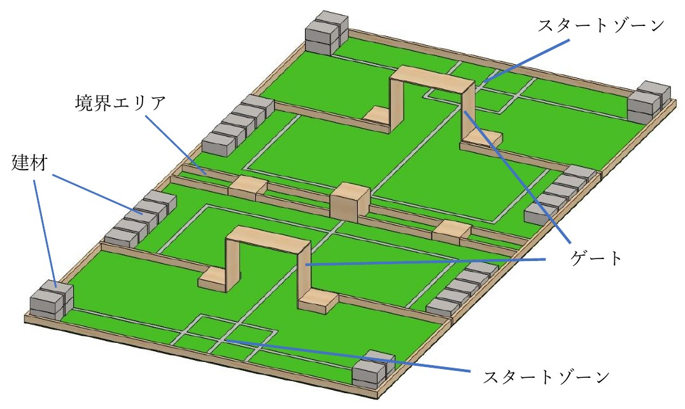
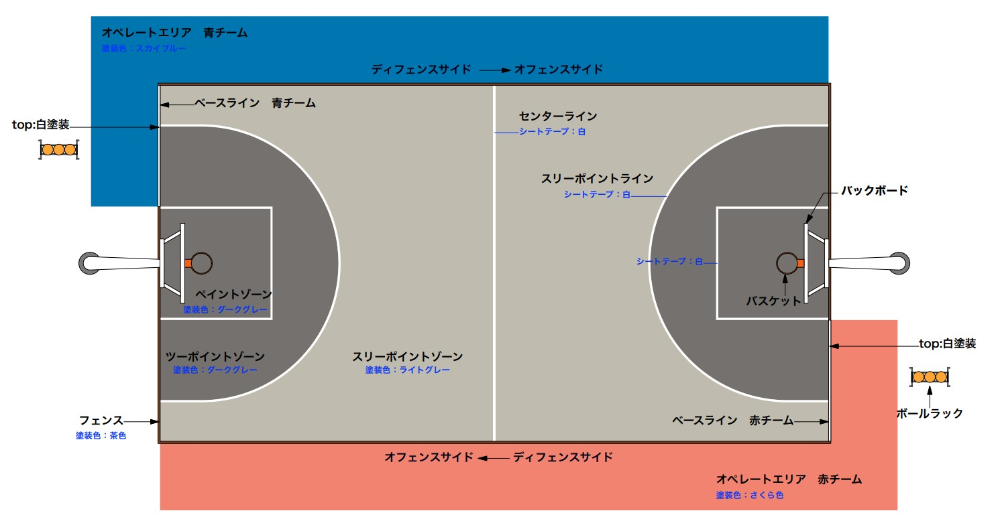
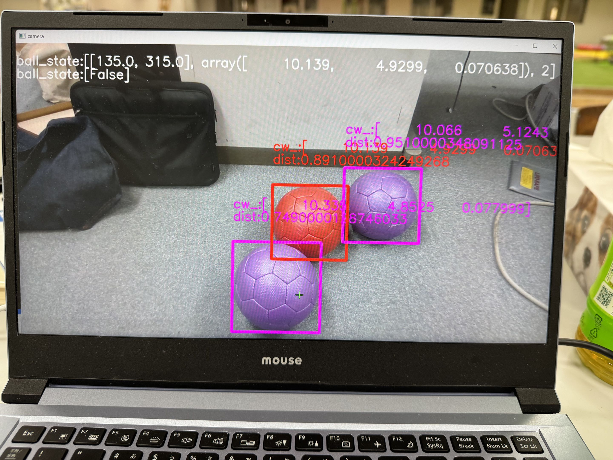
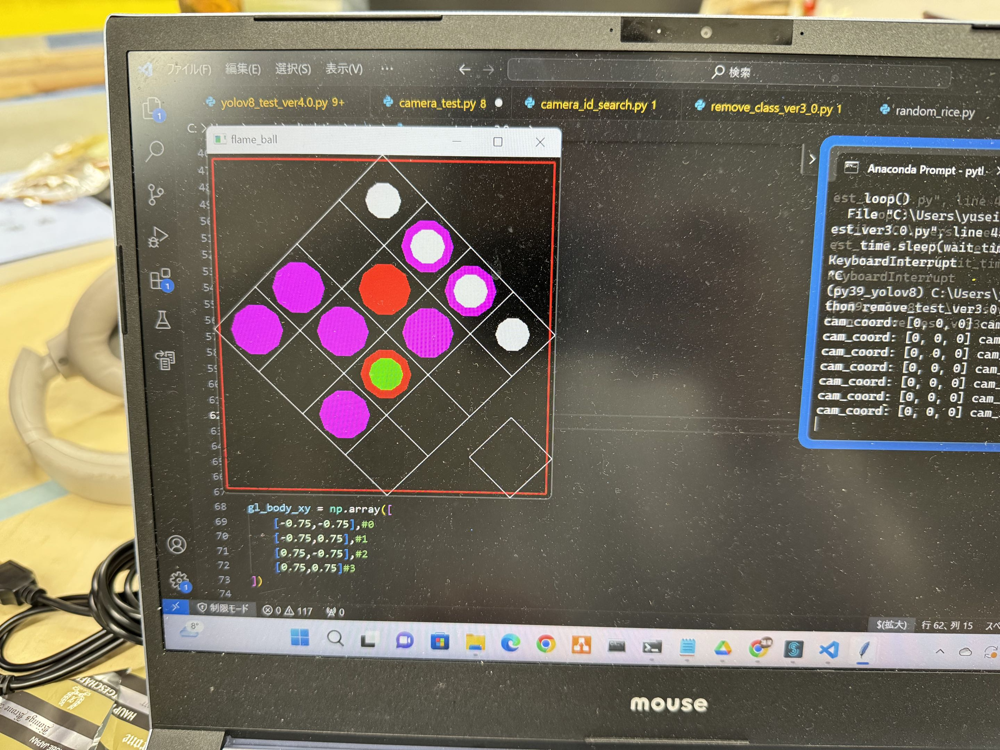
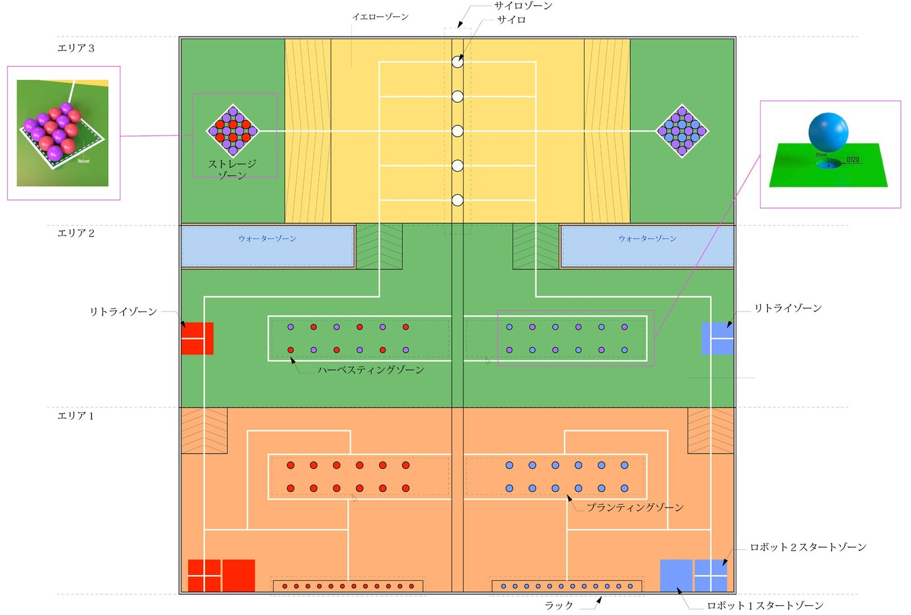
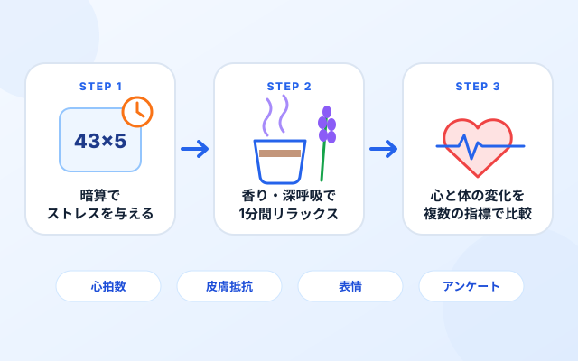
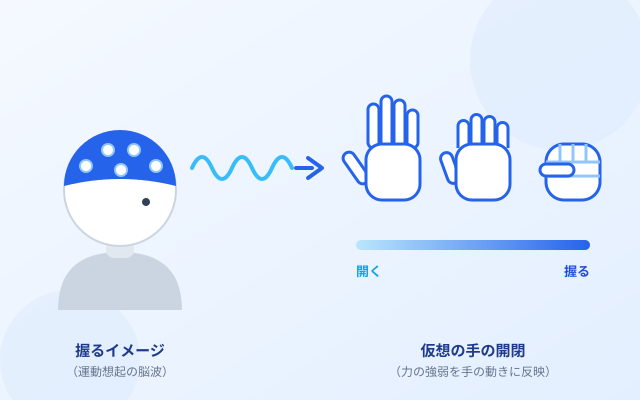
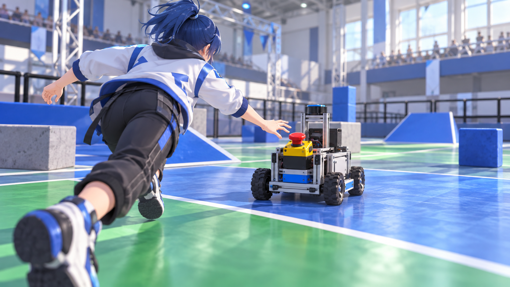

2023 / TEAM RESULT: 優勝
とうロボ2023
ロボット・ニュータウン
段ボール箱の「建材」を運び、各スポットに積み上げる競技。共有スポットでは、最上段を相手チームと取り合います。
- 競技
- 1台・2分30秒。積み上げた建材による得点と、Vゴール条件の達成を競う。
- 自分の担当
- ロボット移動機構の制御。
- 技術的なポイント
- 建材を安定して運ぶための移動と、積み上げる位置への正確な操作。


図を拡大ロボット開発を通じて培った制御技術と課題解決力を基盤に，現在は脳波を用いたBrain-Computer Interfaceの研究に取り組んでいます。人と機械をより自然につなぐ技術の実現を目指しています。
地域活動から始まり，ロボット開発を通じて技術力とチーム力を磨き，現在は人と機械をつなぐBCI研究に挑戦しています。
地域活性化活動に参加し，地域の魅力発信や課題解決に向けた企画・活動を経験。
ロボコン挑戦プロジェクトに所属。9月のF³RCで準優勝し，ロボット開発に本格的に取り組む。
関東春ロボコン，NHK学生ロボコン2023に出場。東海地区交流ロボコンでは優勝。
制御部門幹部として，制御プログラム・画像認識・行動決定アルゴリズムの開発を担当。
LiDARによるゴール・相手機体の認識と，開発段階の機体プログラムを担当。後輩育成や技術継承にも取り組む。
芝浦工業大学大学院に進学。握る力の運動想起を用いて、仮想の手の開閉を制御するMI-BCIを研究。
大学時代はロボコン挑戦プロジェクトに所属し，制御・画像認識・行動決定アルゴリズムを中心に自律ロボット開発へ取り組みました。
順位・受賞は所属チームとしての実績です。
COMPETITIONS & MY ROLE
移動機構の制御、自律動作のための画像認識、LiDARを用いた周囲の認識。それぞれの競技で担当した技術を紹介します。
2023 / TEAM RESULT: 優勝
ロボット・ニュータウン
段ボール箱の「建材」を運び、各スポットに積み上げる競技。共有スポットでは、最上段を相手チームと取り合います。

図を拡大2024 / TEAM RESULT: ベスト8・アイデア賞
HARVEST DAY
米づくりを題材に、2台で苗植え・籾の収穫・サイロへの貯蔵を行う競技。R2には完全自動での動作が求められます。
以下で、競技上の制約からシステム構成、開発画面、改善への取り組みまでを紹介します。
2025 / TEAM RESULT: 出場
ロボットバスケットボール
2台のロボットが攻守を切り替え、ドリブル・パス・シュートで得点を競います。動く相手やゴールとの位置関係を把握することが重要です。

図を拡大SELECTED WORK / NHK STUDENT ROBOCON 2024
カメラ画像から競技中の状況を捉え、籾の回収とサイロへの貯蔵につなげる。
R2の移動機構以外の制御を担当しました。
DEVELOPMENT IN PRACTICE
写真を選ぶと、画像認識・行動決定の詳しい説明へ移動できます。

画像認識の説明を読む赤・紫のボールを検出し、枠と位置・距離に関する値を映像に重ねて表示。認識対象と出力を確認できる開発画面です。

行動決定の説明を読むボールなどの状態を色と配置で可視化。籾の回収やサイロ選択の判断に使う情報を、画面上で確認しながら開発しました。
THE CHALLENGE
「HARVEST DAY」は、米づくりを題材とする競技です。1チーム2台のロボットで、苗植え、籾の収穫、サイロへの貯蔵を進めます。R2には完全自動での動作が求められます。
試合時間
チームのロボット
完全自動
R1が苗に見立てたオブジェクトを指定の場所に植えます。
R1籾に見立てたボールを集め、ストレージゾーンへ運びます。
R1R2が籾を認識・回収し、状況に応じてサイロを選びます。
R2 / 完全自動上図は競技工程と東京工科大学の機体の役割を整理したものです。開始時からストレージにボールがあるため、全工程を順番に終えるまでR2が待つわけではありません。

図を拡大WHAT R2 NEEDS TO RECOGNIZE
赤・青は各チームの籾、紫は空籾です。ストレージから空籾を外へ運び出すと強制リトライになるため、回収対象の識別が重要です。
ルールブック p.8・3.4.3(d)
WHAT R2 NEEDS TO DECIDE
5本のうち3本で「籾3個中2個が自チーム」「一番上も自チーム」を満たすと「ムアバン」で即勝利。空きだけでなく、籾の色と順番が投入先の判断に関わります。
ルールブック p.4–5
ムアバンがなければ3分終了時の合計得点で決着。苗植え10点／本、収穫10点／個、サイロ貯蔵30点／個です。R1・R2間の通信と、直接のボール受け渡しは禁止されています。東京工科大学はワンバウンドでの受け渡しに対応しました。
競技・機体の公式解説（東京工科大学）MY ROLE
制御部門幹部として、移動機構以外のR2制御を担当。カメラから得た情報を競技中の行動に結びつけ、機械・回路部門とも連携しました。
SYSTEM
担当した処理を「認識」「情報の整理」「行動の決定」「制御」の流れとして示します。
担当した処理
赤・紫のボールに検出枠を重ね、位置・距離に関する値を表示しています。実画像上の対象と検出結果を見比べながら、籾を回収するために必要な認識情報を確認しました。検出結果はフィルタを介して、後段の行動決定に利用します。
開発写真を拡大して見るボールなどの状態を、グリッドと色付きの円で可視化した開発画面です。籾の回収やサイロ選択の判断に使う情報を画面上で確認し、認識した状態を次の行動へ結びつける処理を開発しました。
開発写真を拡大して見るENGINEERING
自動機では、画像認識の出力が次の動作を左右します。認識処理だけでなく、判断に渡す情報と行動の選び方までを扱いました。
照明条件などで認識結果が変動すると、誤った対象を回収する要因になります。競技上は、籾と空籾の取り違えがリトライにもつながります。
ログや認識結果を確認し、物体検出に対する判定フィルタと制御処理を修正。後段の行動決定に渡す情報を整理しました。
籾の回収とサイロへの貯蔵では、その時点の状態に応じた行動選択が求められます。
認識した状態を行動決定に結びつけ、籾の回収や貯蔵先の選択を行う処理を担当しました。
制限時間内に回収と貯蔵を進めるためには、各機構の動作順序やタイミングを整える必要があります。
不要な動作の削減、制御処理の修正、機械・回路部門との調整に取り組みました。
対象を「検出できる」ことから、ロボットが実際に「動いて回収・貯蔵する」ところまでつなぐ。
画面上の認識結果で終わらせず、判断結果を機構制御に渡して実機を動かし、フィールド上での動作確認と調整を重ねました。
OUTCOME
NHK STUDENT ROBOCON 2024
プロジェクトRはNHK学生ロボコン2024でベスト8に進出し、アイデア賞を受賞しました。
画像認識の結果をフィルタ・行動決定・機構制御へつなげ、実機が実空間で籾を回収・貯蔵するところまでを実装しました。ソフトウェアの出力を、ロボットの実際の動きとして成立させる経験を得ました。
公式の大会結果・R2紹介を見る身体の状態を計測する研究から、意図を動きにつなぐ研究へ。生体信号を人と機械のインタラクションへ生かす技術に取り組んでいます。
コーヒーおよびラベンダーの香りがもたらすストレス軽減効果の検証

計算課題でストレスを与えたあと、香りや深呼吸でどれだけ落ち着くかを、心拍などの生体信号とアンケートで評価しました。
運動想起の脳波を用いたBrain-Computer Interface（MI-BCI）

手を握る動作を頭の中でイメージしたときの脳波から、力の強弱を読み取り、仮想の手の開閉に反映する仕組みを目指しています。

WORK IN PROGRESS
動き続けるロボットを追いかけ、非常停止ボタンを押して止める、ロボコンをテーマにした3Dゲームを開発中です。
ロボット開発・生体計測・研究活動で扱ってきた技術領域です。
競技・機体の説明、チームの成績、公式写真は大学の掲載ページで確認できます。
チームの過去の活動を紹介するページです。